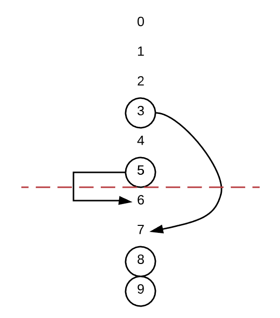

题目来源：https://leetcode.com/problems/random-pick-with-blacklist/description/
标记难度：Hard
提交次数：3/6
代码效率：
- 二分：10.06%
- 重映射：45.67%
题意
给定区间[0, N)和一个该区间内的“黑名单”，要求以均匀的概率返回该区间内非黑名单的数字，且调用rand()的次数尽量少。
分析
二分
我感觉这是一道很妙的题。看到题之后，我的第一反应是：假定黑名单的长度为M，那么我们只需要随机[0, N - M)范围内的数字，然后把它们映射到[0, N)区间内就可以了。问题是怎么映射呢？
于是我想出了这样一种做法：随机得到一个数字之后，计算黑名单中有多少个数小于等于这个数，然后把这个数量加到这个数上，返回结果。然后我就把代码交上去了，于是，很快我就发现这个做法错得有点离谱，因为它完全没有保证返回的数不在黑名单里。反例如N = 4, blacklist = [0, 1]，随机得到0时，上述做法会返回1。
于是我尝试从另一个角度来思考这个问题。我们显然可以显式地构建一个映射：顺序枚举[0, N - M)范围内的数，维护一个指针，指向下一个能够被映射的数，遇到黑名单中的数则跳过。这个做法是正确的，但考虑到1 <= N <= 1000000000的数据量，显然不可能把整个映射表都建立出来，然后去查表。
于是这个思路被否决了，我又回头去考虑怎么在线计算出准确的映射这个问题。我想了想：考虑“黑名单中有多少个数小于等于当前的数”这个思路其实是正确的，问题在于，被考虑的不应该是[0, N - M)中的数，而应该是[0, N)中的数。考察这个例子，N = 9, balcklist = [2, 3, 5]，令blacklist_before(i)表示黑名单中<=i的数的个数：
[0, N)中的数i |
blacklist_before(i) |
i - blacklist_before(i) |
映射到[0, N - M)中 |
|---|---|---|---|
| 0 | 0 | 0 | 0 |
| 1 | 0 | 1 | 1 |
| 2 | 1 | 1 | - |
| 3 | 2 | 1 | - |
| 4 | 2 | 2 | 2 |
| 5 | 3 | 2 | - |
| 6 | 3 | 3 | 3 |
| 7 | 3 | 4 | 4 |
| 8 | 3 | 5 | 5 |
可以观察得到一些非常有趣的性质：
i - blacklist_before(i)是非单调递增的，因为它代表的是[0, i]区间内不属于黑名单内的数的个数- 当
i - blacklist_before(i)没有递增时，表示i是一个黑名单内的数字 i在[0, N - M)区间中应该映射到的数与i - blacklist_before(i)两列很接近（从意义上来说也是）
所以可以从这个逆向映射的角度考虑，用二分的方法解决问题：假定在[0, N - M)中随机得到了y，我们需要找到满足x - blacklist_before(x) == y的x的lower_bound。然后就可以写了。
在讨论区里我看到了类似的做法，但是思考的角度不太一样。我们可以把从区间[0, N - M)中生成随机数r的情形这样分类：[1]
r在[0, B[0])区间内，可以直接返回rr在[B[0], B[1] - 1)区间内，应返回r + 1- …
r在[B[i]-i, B[i+1]-(i+1))区间内，应返回r + i + 1。注意到r + i + 1位于[B[i] + 1, B[i+1])区间内，因此这样做是安全的。
因此可以在B[i] - (i+1)数组中进行二分查找。
这种做法是在经过处理的blacklist数组上进行二分查找，而我是在[0, N)区间上直接查找，所以比我的做法更压缩一些。
HashMap重映射法
我之前考虑过建立整个映射表，但因为数据量而放弃了。然而，事实上，完全不需要把整个映射表都建立出来；或者不如说，完全不需要按顺序建立映射，只要保证所有数字都可以被随机取到即可。所以可以采取这样的一种做法：将黑名单中的元素分成两类，一类在[0, N - M)区间内，一类在[N - M, N)区间内。然后在[N - M, N)区间内为[0, N - M)区间内的黑名单元素顺序寻找映射（我看到了从前向后[2]和从后向前[3]两种方法，不过本质上是相同的），同时注意跳过那些同样在黑名单内的元素。
上述从后向前找映射的一个图示例子：N=10, blacklist=[3, 5, 8, 9]，将3和5映射为7和6。

代码
二分
1 | class Solution { |
重映射
1 | class Solution { |